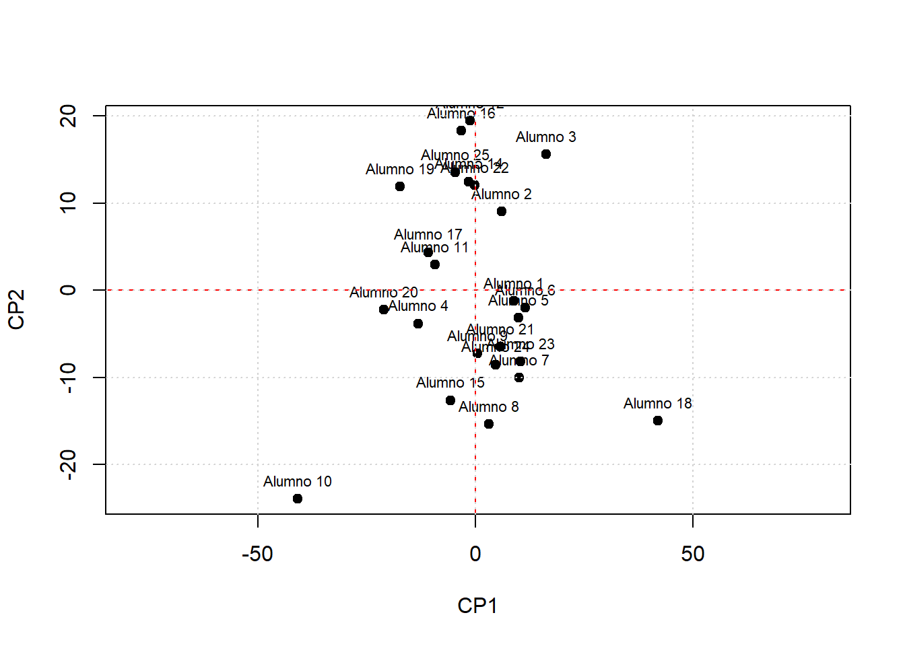

Se utilizará como referente al capitulo 3 del libro Análisis de datos ecol√≥gicos y ambientales (Rodr√≠guez-Barrios, J. 2023), alojado en el siguiente enlace üìñEnlace_Libro
Archivos requeridos. Descargar las plantillas o complementos para los diferentes talleres en Quarto de RStudio. Todos deben ubicarse en un directorio o carpeta titulado “Taller 2.2 Matrices en RStudio”
Diapositivas en vivo. Son diapositivas de apoyo que solo pueden ser usadas durante el horario de clase, ya que es el docente quien puede irlas presentando. Permiten agilizar el procedimiento de cargar los comandos en RStudio.
Enlace a las diapositivas en vivo del taller 2.2a Corresponde a operaciones matriciales básicas y a su aplicación con un análisis de componentes principales (pca), cuyo objetivo es la visualización de gradientes u ordenación de datos en planos cartesianos.
Enlace a las diapositivas en vivo del taller 2.2b Corresponde a la aplicación de matrices con un análisis discrimiante lineal (lda), cuyo objetivo es la generación de funciones lineales que evalúen la calidad de la clasificación de observaciones en grupos previamente asignados (ej. individuos por tipo de sexos).
Material complementario. Revisar los siguientes enlaces complementarios:
Se calculará la determinante de dos matrices cuadradas
#-------------# Ejercicio 2# A (2,3,3,2)# B (1,4,2,5,0,3)# Cacular: Determinante de A y de B#R./A =matrix (c(2,3,3,2),2,2,byrow = T)B =matrix (c(1,4,2,5,0,3),3,3,byrow = T)A
[,1] [,2]
[1,] 2 3
[2,] 3 2
B
[,1] [,2] [,3]
[1,] 1 4 2
[2,] 5 0 3
[3,] 1 4 2
# Determinantesdet(A)
[1] -5
det(B)
[1] 0
1.3 Matriz inversa
Cálculo de una matriz inversa (A)-1
#------------# Ejercicio 3# A (5,2,2,2)# Calcular inversa de A# R./A =matrix(c(5,2,2,2),2,2,byrow=T)A
[,1] [,2]
[1,] 5 2
[2,] 2 2
# Matriz inversa (solve)round(solve(A),2)
[,1] [,2]
[1,] 0.33 -0.33
[2,] -0.33 0.83
1.4 Matriz de varianza - covarianza
Calcular la covaianza para dos matrices rectangulares
A =matrix(c(2,2,4,3,6,9),3,2, byrow= T)B =matrix(c(2:10), 5,2, byrow=T)A
2.5 Figuras de la matriz proyectada “m.Rotada”
# Figura sin editarplot(m.Rotada) # m.Rotada es la matriz rotada
# Figura editada plot(m.Rotada, asp=2, pch=19, xlab="CP1", ylab="CP2") # Rótulos de los ejestext(m.Rotada, labels =row.names(datos),pos=3, cex=0.7) # cex() relaciona el tamaño del textoabline(h=0, col="red", lty=2) # abline (h=0) línea horizontal del plano cartesianoabline(v=0, col="red", lty=2) # abline (v=0) línea vertical del plano cartesianogrid() # Grilla en la figura
2.5 Comparar con el Análisis de Componentes Principales - pca
library(vegan) # Librería requerida# Datos del procedimiento 2.1) Sumas y norma de los vectoreshead(datos[,2:5]) # Variables y observaciones (estudiantes)
pca <-rda(datos[,2:5]) # Realización del pcabiplot(pca) # Figura del pcaabline(h=0, col="blue") # abline (h=0) línea horizontal del plano cartesianoabline(v=0, col="blue") # abline (v=0) línea vertical del plano cartesianogrid()

—
Resultados del taller LDA
2. Análisis discriminante lineal (lda)
2.1 Cargar las librerías o paquetes de R
# libreríaslibrary(MASS)library(lattice)
2.2 Cargar base de datos (datos1.csv)
# 2.2 Cargar la base de datos de Excel *.csvdatos2 =read.csv2("datos1.csv",row.names=1) datos2 # Falta un dato al estudiante 13
Sexo Longitud.total Cintura Longitud.espalda Long.brazo
Alumno 1 F 170 85.0 43 57
Alumno 2 F 160 80.0 41 54
Alumno 3 F 156 88.0 35 48
Alumno 4 F 173 63.0 53 59
Alumno 5 M 170 86.0 47 56
Alumno 6 M 165 89.0 45 61
Alumno 7 M 170 88.0 56 59
Alumno 8 M 181 80.0 60 55
Alumno 9 M 175 76.0 55 54
Alumno 10 M 186 45.0 60 86
Alumno 11 F 168 65.0 49 55
Alumno 12 F 155 70.0 36 50
Alumno 13 F 150 85.5 45 NA
Alumno 14 F 158 72.0 40 55
Alumno 15 M 172 79.0 43 82
Alumno 16 F 155 68.0 39 50
Alumno 17 F 163 68.0 38 70
Alumno 18 M 170 122.0 48 60
Alumno 19 F 157 60.0 36 69
Alumno 20 F 162 60.0 50 76
Alumno 21 M 170 82.0 55 56
Alumno 22 F 158 75.0 35 60
Alumno 23 M 174 87.0 51 56
Alumno 24 F 170 88.0 37 78
Alumno 25 F 162 68.0 37 53
Sexo LTot Cint LEsp LBra
F:14 Min. :155.0 Min. : 45.00 Min. :35.00 Min. :48.00
M:10 1st Qu.:159.5 1st Qu.: 68.00 1st Qu.:37.75 1st Qu.:54.75
Median :169.0 Median : 77.50 Median :44.00 Median :56.50
Mean :166.7 Mean : 76.83 Mean :45.38 Mean :60.79
3rd Qu.:170.5 3rd Qu.: 86.25 3rd Qu.:51.50 3rd Qu.:63.00
Max. :186.0 Max. :122.00 Max. :60.00 Max. :86.00
# Matriz de variables para los hombreshombres = datos2[datos2$Sexo =="M",]hombres
Sexo LTot Cint LEsp LBra
Alumno 5 M 170 86 47 56
Alumno 6 M 165 89 45 61
Alumno 7 M 170 88 56 59
Alumno 8 M 181 80 60 55
Alumno 9 M 175 76 55 54
Alumno 10 M 186 45 60 86
Alumno 15 M 172 79 43 82
Alumno 18 M 170 122 48 60
Alumno 21 M 170 82 55 56
Alumno 23 M 174 87 51 56
mujeres = datos2[datos2$Sexo =="F",]mujeres
Sexo LTot Cint LEsp LBra
Alumno 1 F 170 85 43 57
Alumno 2 F 160 80 41 54
Alumno 3 F 156 88 35 48
Alumno 4 F 173 63 53 59
Alumno 11 F 168 65 49 55
Alumno 12 F 155 70 36 50
Alumno 14 F 158 72 40 55
Alumno 16 F 155 68 39 50
Alumno 17 F 163 68 38 70
Alumno 19 F 157 60 36 69
Alumno 20 F 162 60 50 76
Alumno 22 F 158 75 35 60
Alumno 24 F 170 88 37 78
Alumno 25 F 162 68 37 53
Paso 1. Vectores de mesdias para hombres y muejeres (M1 y M2)
# Comando colMeans para el cálculo de los vectores de mediapromedio.h =colMeans(hombres[,c(2:5)])promedio.h
grupo.d =data.frame(c(grupo.d.m, grupo.d.h)) # grupo.d = Columna con grupos discriminadosdatos.d =data.frame(da, grupo.i, grupo.d) datos.d
da grupo.i c.grupo.d.m..grupo.d.h.
W1 -0.1271618 F F
W2 -3.2658277 F F
W3 -5.2816257 F F
W4 0.6418749 F M
W5 1.6137960 M M
W6 1.1092793 M M
W7 5.8997846 M M
W8 7.1499551 M M
W9 3.5922827 M M
W10 4.0483574 M M